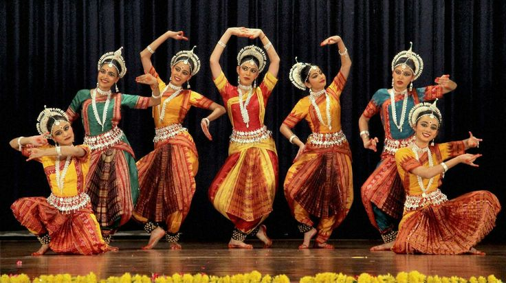

Discover the Language of Dance
Unveil the stories told by ancient hand gestures. KinetiQ helps you identify and understand the rich vocabulary of Mudras.
Start ExploringIdentify a Mudra
Upload an image, use your camera, or paste an image URL
Output Mudras
Your identified Mudra will appear here
Mudra Name
e.g., Pataka
A detailed description of the identified Mudra will be displayed here after analysis.